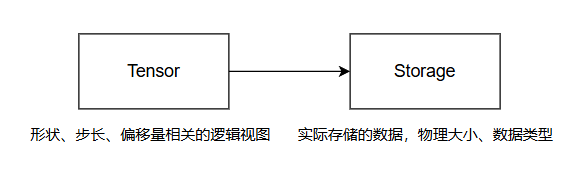
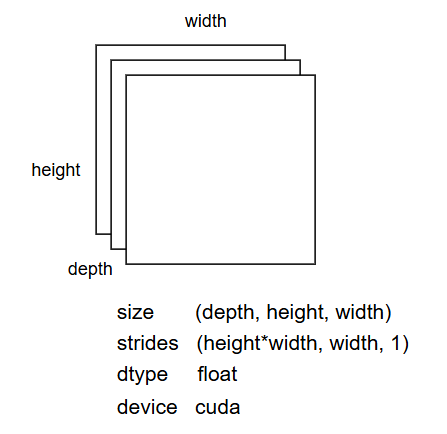

DolphinDB Tensor 及 LibTorch 模型推理插件使用教程
在 TensorFlow, PyTorch 等现代机器学习库中，类似于多维数组的张量（Tensor） 被视作核心的数据结构，是处理数据的基本单位。Tensor 不仅能存储数据，还支持一系列如加法、乘法、转置等操作以实现数据的灵活转换与处理。这些操作经过深度优化，能够无缝对接 CPU 与 GPU 等多种硬件平台，从而加速数据处理流程，且满足从基础到复杂多变的计算需求。Tensor 能够灵活地表达从简单的一维向量到复杂的多维矩阵、乃至更高维度的数组，这一特性让它成为执行各种数据类型科学计算（包括图像、声音、文本等）的理想选择。
对此，DolphinDB 实现了自己的 Tensor 数据形式，并开发了如 LibTorch 等模型推理插件，方便用户在 DolphinDB 环境中完成模型的加载和推理。
本文将介绍 DolphinDB 开发的 Tensor 数据形式的实现原理，以及在机器学习领域中的应用示例。
1. DolphinDB Tensor 介绍
DolphinDB 开发的 Tensor 数据形式允许用户完成从普通数据库数据到 Tensor 数据形式的转换，以便于开发和部署机器学习模型。此外，DolphinDB 还推出了用于深度学习模型推理的插件，如 LibTorch，让用户在数据库环境内即可完成模型的加载与预测。
1.1 设计目的
在深度学习和机器学习领域，张量（Tensor）是一个核心概念，广泛用于对多维数据的处理。为了与深度学习框架（如 PyTorch）更好地集成，DolphinDB 引入了 Tensor 数据结构。
目前在 DolphinDB 中，Tensor 主要通过函数tensor生成，并且生成的 Tensor 主要在 DolphinDB
的插件（如 LibTorch 等）中使用，用于与深度学习框架进行数据交换或处理。
在 DolphinDB 支持 Tensor 数据形式之前，需要通过 Python API 拿到 DolphinDB 中的数据，在 Python 环境中使用如 PyTorch、TensorFlow 库进行模型预测。
而在 DolphinDB 推出 Tensor 数据形式和深度学习模型推理插件之后，用户无需将数据传输到 Python 环境中进行预测，而是在 DolphinDB 数据库环境中就可以完成对数据的处理，然后将得到的 Tensor 数据通过深度学习插件输入到加载的模型完成预测。这样提供了一个更加便捷灵活的数据处理和模型预测的解决方案。
1.2 实现原理
Tensor 是行优先的多维数组，其实现类似于 Torch 的 strided tensor，即一块连续的内存区域 storage，以及相关的类型、形状、步长等元信息：
Tensor 数据的存储方式由 shape 和 strides 决定，两者都为整型数组，数组的长度为 Tensor 的维度。shape[i] 表示第 i 个维度的 size；strides[i] 表示在第 i 个维度中，一个元素与下一个元素的距离。
数据的长度为 n，则 i=0 表示最高维度；i=n-1 表示最低维度。
2.LibTorch 模型推理插件
PyTorch 是一个流行的机器学习库，广泛用于深度学习领域，它提供了灵活的编程环境，易于使用的 API，并支持 GPU 加速。LibTorch 继承了 PyTorch 的许多特点，但专门为 C++ 用户设计。这使得 C++ 开发者可以利用 PyTorch 的强大功能，无需使用 Python。
使用 DolphinDB 的 LibTorch 插件，您可以在 DolphinDB 中轻松地加载预训练的 LibTorch 模型，并直接使用 DolphinDB 数据库中的数据作为输入，在数据库环境内完成预测操作。
2.1 安装与加载
LibTorch 插件可以在 3.00.1 版本及以上的 Shark（GPU 版 DolphinDB）中通过插件市场进行下载安装，提供 CPU 和 GPU 两个版本的插件。
节点启动后，连接节点并在 GUI（或 VS Code、Web UI）等 DolphinDB
客户端中执行installPlugin函数，则可以下载到与当前 server 版本适配的 LibTorch
插件文件，插件文件包括插件描述文件及插件的二进制文件。
installPlugin("LibTorch") // 下载 CPU 版本的 LibTorch 插件
installPlugin("GpuLibTorch") // 下载 GPU 版本的 LibTorch 插件在脚本中调用插件相关的接口前，需要先加载插件，在 GUI（或 VS Code、Web UI）等客户端中执行
loadPlugin("LibTorch") 即可完成加载。
如果加载插件时遇到 "The module [LibTorch] is already in use."
报错，这是因为重复执行了loadPlugin加载插件。节点启动后，只允许加载一次 LibTorch
插件，即可在任意会话中调用该插件提供的函数。
可以通过 try-catch 语句捕获这个错误，避免因为插件已加载而中断后续脚本代码的执行。
try{
loadPlugin("./plugins/LibTorch/PluginLibTorch.txt")
} catch(ex) {
print ex
}2.2 模型文件格式
LibTorch 插件无法直接加载 PyTorch 模型文件格式，而是需要 TorchScript 模型文件格式。可以通过在 python
中简单地调用torch.jit.trace或者torch.jit.script完成从
PyTorch 到 TorchScript 模型文件格式的转换。
# 通过 torch.jit.trace 进行模型转换
traced_model = torch.jit.trace(model, example_input)
# 保存供 LibTorch 插件加载使用
traced_model.save("model.pt")LibTorch 插件使用的是 2.1 版本的 LibTorch 库，为避免训练、加载和预测模型时使用的 PyTorch 版本不同导致产生兼容性问题，推荐使用 2.0 及以上版本的 PyTorch 进行模型训练。
2.3 Tensor 数据类型转换
LibTorch 插件要求预测的数据输入形式是 DolphinDB Tensor，可以使用 tensor 函数将
DolphinDB 其他的数据形式转换为 Tensor 形式，如下是具体的转换规则：
|
其他数据形式 |
DolphinDB Tensor |
|---|---|
| Scalar | 1 维 Tensor |
| Vector | 1 维 Tensor |
| Matrix | 2 维 Tensor |
| Table | 2 维 Tensor |
| Tuple of Vector（即 Tuple 的每个元素都为 Vector） | 2 维 Tensor |
| Tuple of Matrix（即 Tuple 的每个元素都为 Matrix） | 3 维 Tensor |
| Tuple of (Tuple of Vector) | 3 维 Tensor |
| Tuple of (Tuple of (Tuple of …)) | n 维 Tensor |
// 标量转为 tensor
tensor(3)
/* 输出一个长度为 1 的 1 维 tensor<int[1]>:
0: int 3
*/
// 向量转为 tensor
tensor(1 2 3)
/* 输出一个长度为 3 的 1 维 tensor<int[3]>：
0: int 1
1: int 2
2: int 3
*/
//列式元组转为 tensor
tp = [[1.3,2.5,2.3], [4.1,5.3,5], [4.1,5.3,5]]
tp.setColumnarTuple!()
tensor(tp)
/* 输出一个 2 维 tensor<double[3][3]>：
0: double[3] [1.3, 2.5, 2.3]
1: double[3] [4.1, 5.3, 5]
2: double[3] [4.1, 5.3, 5]
*/另外还需要注意的是，在 DolphinDB 场景中，普通的 tuple of vector 的每一个元素都是代表一列，和 Python 不同，如：
t = [[1,2],[3,4],[5,6]]
tensor(t)[1,2], [3,4], [5,6] 每个分别代表一列，所以共有两行三列，转换成的 Tensor 如下：

可以使用 setColumnarTuple! 函数，将该 tuple of vector 转成行存储的形式，如
t = [[1,2],[3,4],[5,6]].setColumnarTuple!()
tensor(t)这样处理后[1,2], [3,4], [5,6]每个分别代表一行，所以是三行两列，转换成的 Tensor 如下：
同样，如果输入的是多重嵌套的数组，且也希望按照行存储形式转换成 Tensor
时，也需要通过setColumnarTuple!函数处理，如下：
data = [[[1,2],[3,4],[5,6]], [[7,8],[9,10],[11,12]]]
tensor(data) // 按列存储方向解析，转换成 2 * 2 * 3 形状的 tensor
for (i in 0: size(data)) {
data[i] = data[i].setColumnarTuple!()
}
tensor(data) // 按行存储方向解析，转换成 2 * 3 * 2 形状的 tensor2.4 基础接口使用说明
LibTorch
插件主要有loadpredict
通过load
model = LibTorch::load("path/model.pth")通过predict接口进行预测，输入数据得到预测结果。
tensor1 = tensor([[0.7740, -1.7911], [0.0267, 0.1928]])
tensor2 = tensor([[0.0267, 0.1928], [-1.6544, 1.2538]])
ans = LibTorch::predict(model, [tensor1, tensor2], true)接口predict的第一个参数 model 是加载模型得到的句柄；第二个参数 input
是输入数据，要求是一个 Tensor 对象或由多个 Tensor 对象组成的数组；第三个是可选参数 parseResult
用来指定是否解析预测结果，为 false 时predict接口返回 Tensor 形式的结果，默认为
true，此时返回嵌套数组形式的结果。
3. 案例演示
本例以预测未来股票收盘价的模型为例，来展示模型加载和预测的操作过程，脚本代码见附录 1。
首先在 Python 中训练一个模型，该模型使用了 LSTM(Long Short-Term Memory) 模型，旨在根据过去的收盘价数据预测未来的股票收盘价，模型的每个输入样本只有一个特征，即股票的收盘价。模型定义脚本见附录 2。
将某标的一年的收盘价数据导入到 DolphnDB server 中，之后通过该数据来预测未来的股票收盘价，导入脚本如下：
data_vector = float(loadText("/path/closing_prices.csv").Closing_Price)定义输入数据预处理函数。
//模型预测需要三维结构，所以需要对输入数据做预处理
def prepareData(data_vector){
// 对数据进行归一化操作，归一化到 [-1,1]范围
minv = min(data_vector)
maxv = max(data_vector)
data_normal = 2 * ((data_vector - minv) / (maxv - minv)) - 1
// 按照 20 大小的滑动窗口展开成3维预测数据
input = []
aggrJoin = defg(mutable re, data){
re.append!(matrix(data))
return 0
}
moving(aggrJoin{input}, data_normal, 20)
return input
}输入数据集预处理，并将数据转换成 Tensor 形式。
input_data = prepareData(data_vector)
input = tensor(input_data)加载 LibTorch 模型文件，传入数据进行预测。
model = LibTorch::load("/path/scripted_model.pth")
output = LibTorch::predict(model, input)对预测的结果做反归一化处理，得到预测的未来股票收盘价结果。
maxv = max(data_vector)
minv = min(data_vector)
result = (output + 1) * (maxv - minv) / 2 + minv4. 总结
本篇文章介绍了 DolphinDB 中的 Tensor 数据形式和 LibTorch 模型推理插件使用。文章说明了如何在 DolphinDB 环境中将常规的如向量、矩阵、表等数据转换为 Tensor 形式，并将其用作模型输入以生成预测结果，提供了一个在数据库环境中完成数据查询、数据处理、模型预测的解决方案。